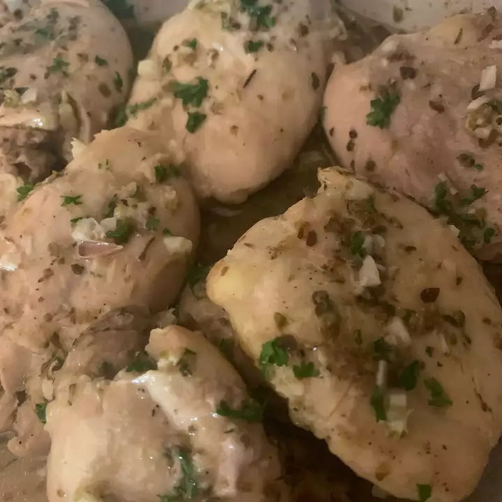

Mediterranean Lemon Chicken

Description
Just give it a try!
Ingredients
- 1 lemon
- 2 teaspoons dried oregano
- 3 cloves garlic, minced
- 1 tablespoon olive oil
- ¼ teaspoon salt
- ¼ teaspoon ground black pepper
- 6 chicken legs
Steps
- In a 9x13 inch baking dish, grate the peel from 1/2 the lemon, squeeze out the juice (about 1/4 cup) and add to peel with the oregano, garlic, oil, salt and pepper. Stir until mixed.
- Remove skin from chicken pieces and discard. Coat chicken pieces with the lemon mixture and arrange, bone-side up, in the baking dish.
- Cover dish and bake for 20 minutes. Turn and baste chicken.
- Reduce heat to 400 degrees F (205 degrees C) and bake uncovered, basting every 10 minutes, for about 30 more minutes. Serve chicken with pan juices.
Return to main page